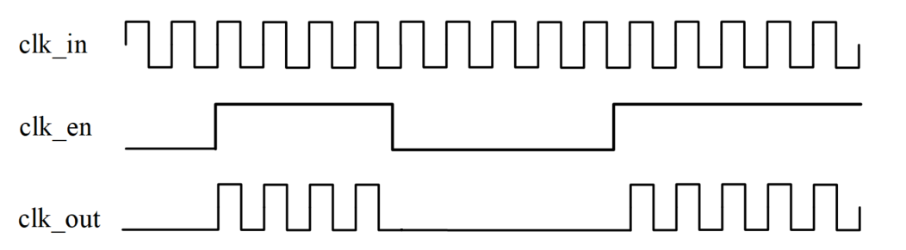
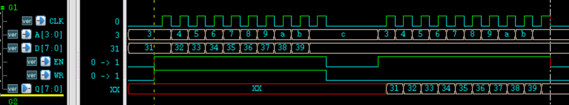
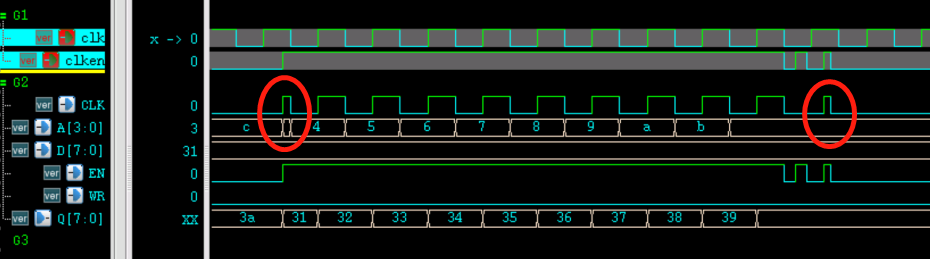
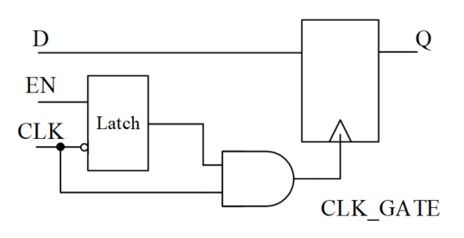
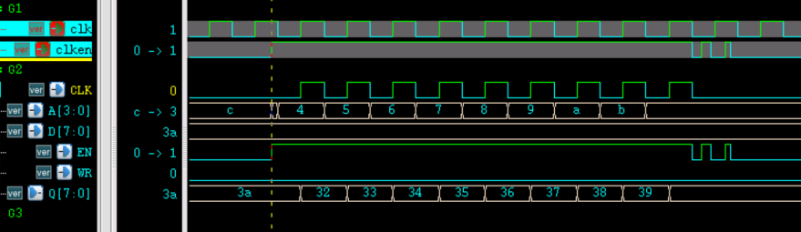
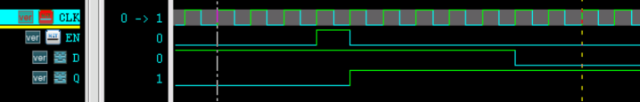
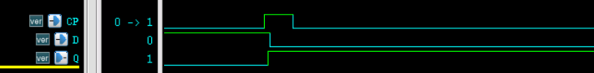

ゲーテッドクロック
通常、クロックツリーは多数のバッファとインバータで構成されます。クロック信号は設計中で最もトグル率の高い信号であり、クロックツリーの消費電力は設計全体の消費電力の30%にも達することがあります。ゲーテッドクロック（clock gating）回路を追加することで、クロックツリーのスイッチング動作を減らし、スイッチング消費電力を節約できます。同時に、クロックピンのスイッチング動作が減ることで、レジスタの内部消費電力も減少します。したがって、ゲーテッドクロックを採用することで、効果的に消費電力を削減できます。
実現原理
わかりやすく言うと、モジュールやフリップフロップが動作していないときに、クロックを停止しても正常な機能に影響を与えないロジックを、ゲーテッドクロックロジックと呼ぶことができます。このときクロックは常に存在するわけではないため、イメージ的にゲーテッドクロックと呼ばれます。

ゲーテッドクロックを実現する方法は主に以下の3つです。
1、ANDロジックを使用
最も簡単な方法は、クロックイネーブル制御（ゲーティング）信号とクロックを直接AND演算することです。
例えば、RAMのクロックに対してこの操作を行う場合、コードは以下の通りです。
例
module clkgate_basic
(
input clk ,
input clken ,
input rstn ,
input wr_en ,
input [3:0] addr ,
input [7:0] data ,
output [7:0] q
);
//clk gate
wire clk_gate = clk & clken ;
ram #(4, 8)
u1_ram16x8
(
.CLK (clk_gate),
.A (addr),
.D (data),
.EN (clken),
.WR (wr_en),
.Q (q));
endmodule
RAMモデルは以下の通りです。
例
#( parameter AW = 2 ,
parameter DW = 3 )
(
input CLK ,
input [AW-1:0] A ,
input [DW-1:0] D ,
input EN ,
input WR , //1 for write and 0 for read
output reg [DW-1:0] Q
);
parameter MASK = 3 ;
reg [DW-1:0] mem [0:(1<<AW)-1] ;
always @(posedge CLK) begin
if (EN && WR) begin
mem[A] <= D ;
end
else if (EN && !WR) begin
Q <= mem[A] ;
end
end
endmodule
testbenchコードは以下の通りです。
例
module test ;
//signals declaration
reg rstn ;
reg clk ;
reg clken ;
reg wr_en ;
reg [3:0] addr ;
reg [7:0] data ;
wire [7:0] q ;
initial begin
rstn = 0 ;
#7 rstn = 0 ;
end
always begin
#50 clk = 0 ;
#50 clk = 1 ;
end
//data logic
initial begin
clken = 0 ;
wr_en = 0 ;
addr = 4'h3 ;
data = 8'h31 ;
# 53 ;
//(1) normal write and read
clken = 1 ;
wr_en = 1 ;
repeat(9) begin
@(negedge clk) ;
data = data + 1 ;
addr = addr + 1 ;
end
@(negedge clk) ;
clken = 0 ;
wr_en = 0 ;
//read
#211;
addr = 4'h3 ;
clken = 1 ;
repeat(9) begin
@(negedge clk) ;
addr = addr + 1 ;
end
@(negedge clk) ;
//end
clken = 0 ;
end // initial begin
clkgate_basic u_ram_clkgate
(
.clk (clk),
.clken (clken),
.rstn (rstn),
.wr_en (wr_en),
.addr (addr),
.data (data),
.q (q)
);
//simulation finish
always begin
#100;
if ($time >= 10000) begin
#1 ;
$finish ;
end
end
endmodule
RAMポート信号を取得したテスト結果は以下の通りです。
図からわかるように、読み書き操作の間に、RAMクロックが常に0になる区間があります。RAMが動作していないときはクロックがトグルしないため、実際にも多くの消費電力を削減できます。

この方法の欠点も非常に明白です。タイミングやジッタの原因により、クロックイネーブル信号とクロックをAND演算した後、グリッチが発生しやすく、デジタル回路に深刻な影響を与える可能性があります。
testbenchでクロックイネーブル信号を非理想的なものとしてシミュレートするために、以下のシミュレーションコードを追加します。
例
#985;
addr = 4'h3 ;
clken = 1 ;
repeat(9) begin
@(negedge clk) ;
addr = addr + 1 ;
end
@(negedge clk) ;
clken = 0 ;
#20 clken = 1 ;
#21 clken = 0 ;
#31 clken = 1 ;
#13 clken = 0 ;
RAM読み出しのシミュレーション結果は以下の通りです。

図からわかるように、信号clkenの非同期やジッタの問題により、RAMに入力されるクロックにすでにグリッチが発生しています。アドレス0x3のデータは取りこぼされ（イネーブル信号のタイミングに関係）、アドレス0xCのデータは2回読み出されています。明らかに、このゲーテッドクロックのロジック設計は非常に危険です。
このような問題を解決するには、ラッチ構造を使用してグリッチを除去する必要があります。
2、ラッチを使用
『Verilog チュートリアル』の章の『6.5 Verilog ラッチを避ける』で述べたように、デジタル設計ではラッチの発生を避けるべきですが、クロックゲーティングは例外です。したがって、タイミング解析を行う際に、クロックゲーティング部分で発生するラッチを考慮する必要はありません。
ラッチを使用してゲーテッドクロックのグリッチを除去する回路図は以下の通りです。
クロックの立ち下がりエッジでクロックイネーブル信号をラッチし、1クロック周期内で変化しないように保持します。ラッチされた信号とクロックをAND演算することで、ゲーテッドクロックのグリッチを除去できます。

シミュレーション例のAND演算を直接行うゲーテッドクロックロジック部分を、ラッチロジックを使用するように書き換えます。修正は以下の通りです。
例
reg en_latch ;
always @(*) begin
if (!clk) begin
en_latch = clken ;
end
end
wire clk_gate = clk & en_latch ;
シミュレーション結果は以下の通りです。
アドレス0x3のデータは依然として取りこぼされますが（イネーブル信号のタイミングに関係）、RAMのクロックは正常なクロックとなり、グリッチは発生しなくなりました（黄色でマークされたCLK信号）。

3、標準セルライブラリを使用
ラッチを使用することでゲーテッドクロックのグリッチ発生を解決できますが、タイミングも厳密な制約が必要です。
FPGAやIC設計では、合成ライブラリに集積ゲーティングロジックセルが含まれていることがよくあります。このようなゲーティングロジックセルは、数多くの更新と検証を経ているため、より便利かつ安全に使用できます。
したがって、一般的な場合、ゲーテッドクロックの設計でも専用の集積ゲーティングロジックセルを直接呼び出します。呼び出し方法は基本的なANDゲートやバッファなどの基本セルと同様で、直接インスタンス化するだけです。
使用方法
ゲーテッドクロックロジックを適切に使用して回路クロックを制御することで、消費電力を効果的に削減することもできます。
1、手動ゲーティング
クロックイネーブル信号を追加し、モジュールの動作クロックの有無を人為的に制御します。
モジュールが動作するときはイネーブル信号を有効にしてクロックをオンにします。モジュールがアイドル状態のときはイネーブル信号を無効にしてクロックをオフにし、消費電力を節約します。
前のセクションのシミュレーション設計は、手動ゲーティングの例と見なすことができます。RAMの読み書き時はイネーブル信号がハイになり、RAMクロックがオンになり、RAMが動作を開始します。イネーブル信号がローのときはRAMは動作せず、このとき入力クロックはありません。
2、自動ゲーティング
モジュールは動作中に自身の動作状態を自動的に検出し、busy（ビジー）信号を出力できます。外部はこの指示信号を使用して、モジュール内部の一部のロジックに対してクロックゲーティングを行い、クロックのトグルを減らすことで、自動ゲーティングの制御を実現できます。
手動ゲーティングと異なり、これらのモジュールは動作中に短いアイドル状態があります。自動ゲーティングは、この短いアイドル状態の間に不要なクロックをオフにすることです。手動ゲーティングのようにモジュール全体のクロックを直接オフにするのではなく、そうしないとモジュールは正常に動作できなくなります。
例えば、UARTが1回のデータ転送を完了するとアイドル状態が発生します。このとき、FIFOロジックやボーレート生成ロジックなどのモジュールのクロックを自動的にオフにできます。
例えば、CPUを含む設計では、busバスのアイドル状態を検出するロジックを追加し、busバスのクロックのオン/オフを自動制御することで、消費電力を削減できます。
紙面の都合上、ここではシミュレーションの例を省略します。
3、自動ゲーティング挿入
RTL設計が完了してロジック合成を行うとき、コンパイラはコードのロジックも自動的に最適化します。これには、一部のフリップフロップのクロック端子に対するゲーティングも含まれます。例えば、イネーブル端子付きの同期DフリップフロップのRTL記述は以下の通りです。
例
always @(posedge CLK) begin
if (EN) begin
Q = D ;
end
end
そのRTL前段シミュレーションは下図の通りです。

合成後のシミュレーション波形は、通常下図のようになります。

比較すると、合成後にはEN信号がなくなり、クロック（CP端子）もクロックゲーティング後は常に存在するわけではありません。ロジックの正確性を保証しつつ、クロックのトグルを減らし、消費電力を削減しています。